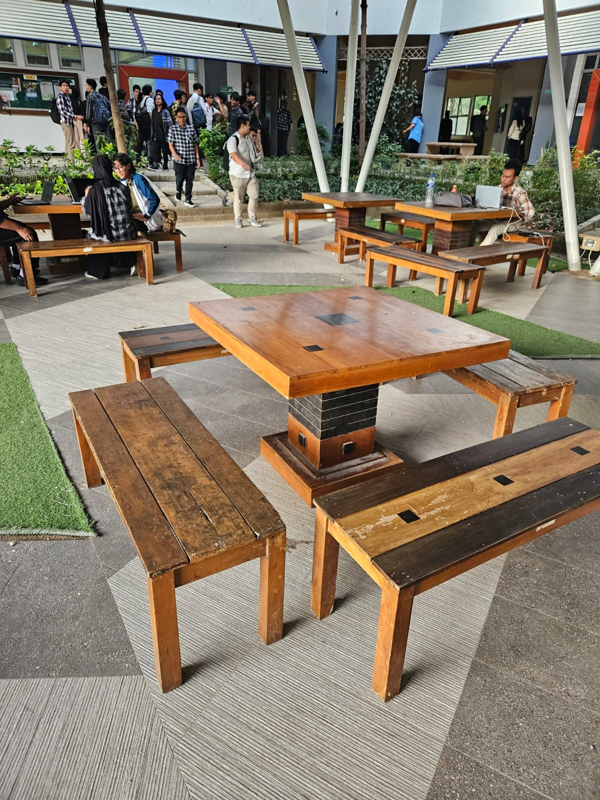

Camera - X Axis Rotation -
0360.0
Camera - Y Height Rotation -
-0.510.0
Zoom -
0.22.0
Toggle Movement
Toggle Prespective - Orthogonal
Toggle Light Movement
Lighting Controls
Rotating Light Speed -
0180.0
Static Light Y-Position -
0.210.0
Specular Shininess (Exponent) -
1.0100.0
